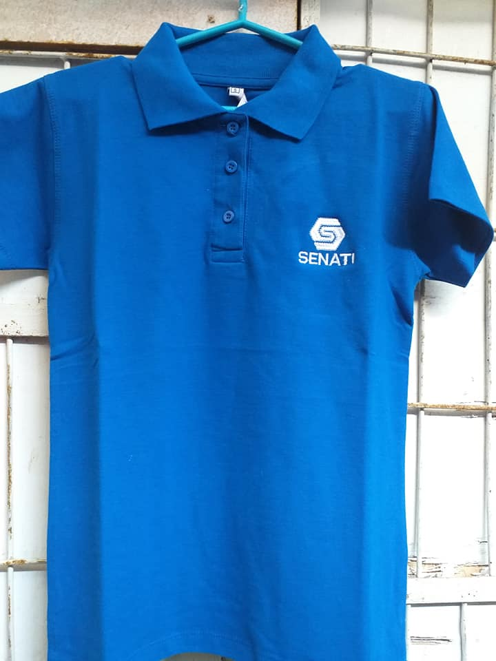

Clima del Día: Calor Senatino



Hoy se presenta un día caluroso en SENATI. Para mantener el confort y la formalidad institucional, te recomendamos usar el uniforme de verano: polo camisero azul institucional, pantalón de vestir oscuro y zapatos formales negros. Esta combinación te permitirá mantener una imagen profesional mientras te mantienes fresco durante tus actividades académicas.
Recomendaciones para este día:
- La hidratación es fundamental, mantén contigo una botella de agua y bebe regularmente durante el día.
- Aplica protector solar antes de salir, especialmente en rostro y brazos expuestos al sol.
- Tu polo camisero institucional debe estar impecable, representa la imagen de SENATI.
- Durante los traslados, protégete del sol con lentes oscuros o gorra en colores sobrios.
- Lleva paraguas o sombrilla si vas a caminar mucho.